( Trinity Groves )
Hospitality, Mid-Rise, Residential
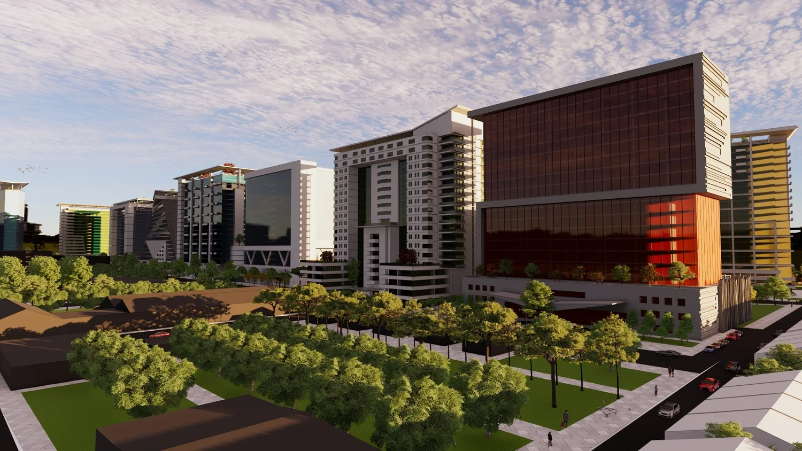
01 Mixed-use architecture02 Site & master planningDesign and site planning.
For clients across Texas and beyond.
Hospitality, Mid-Rise, Residential
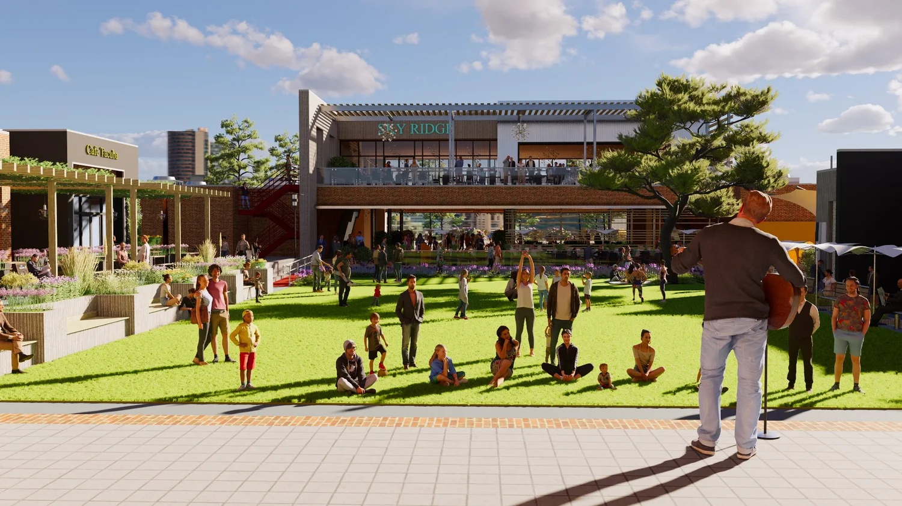
Hospitality, Commercial, Retail
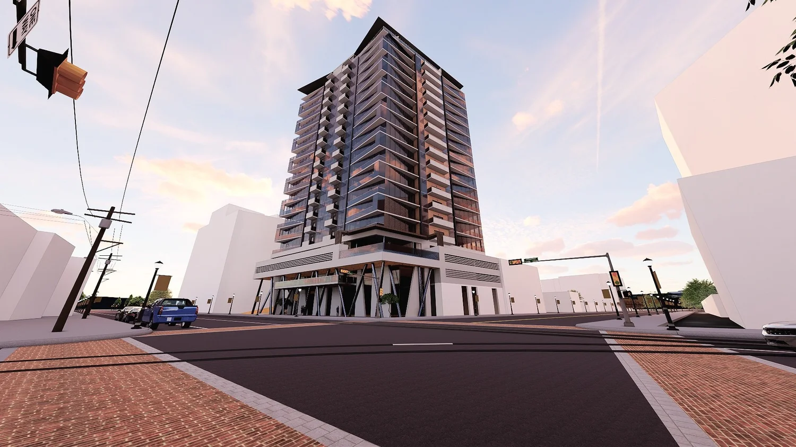
Mid-Rise, Residential
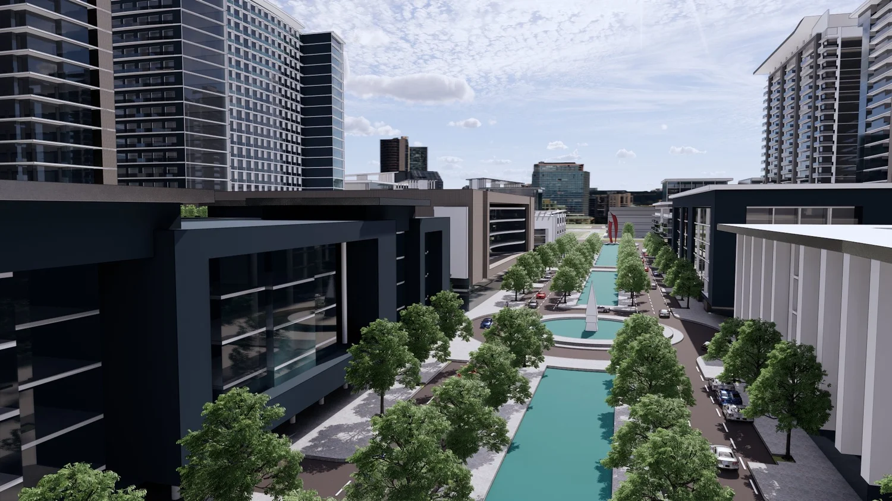
Commercial, Mid-Rise
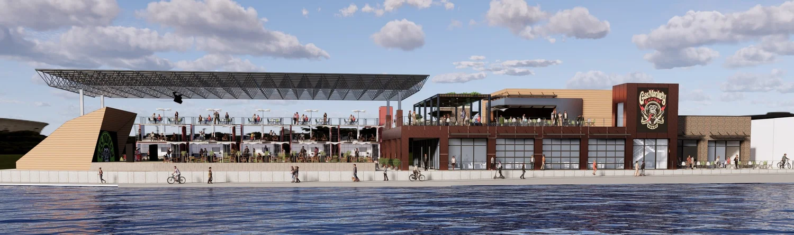
Commercial, Hospitality
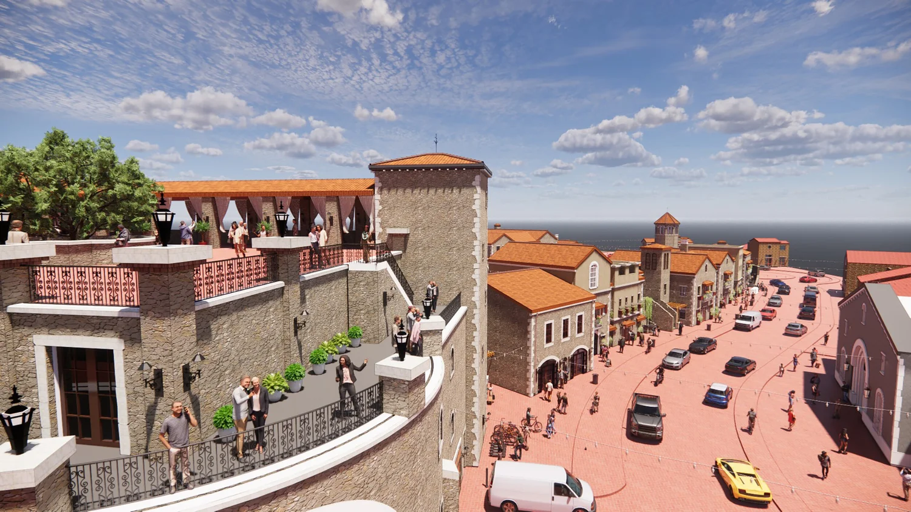
Hospitality, Commercial, Residential, Retail · Westlake, TX
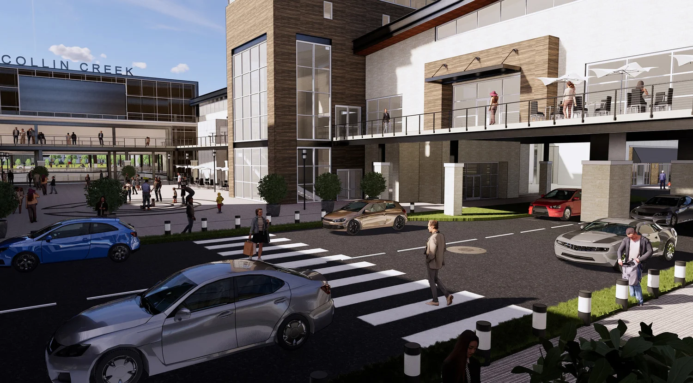
Commercial, Hospitality, Retail, Mid-Rise, Residential · Plano, TX
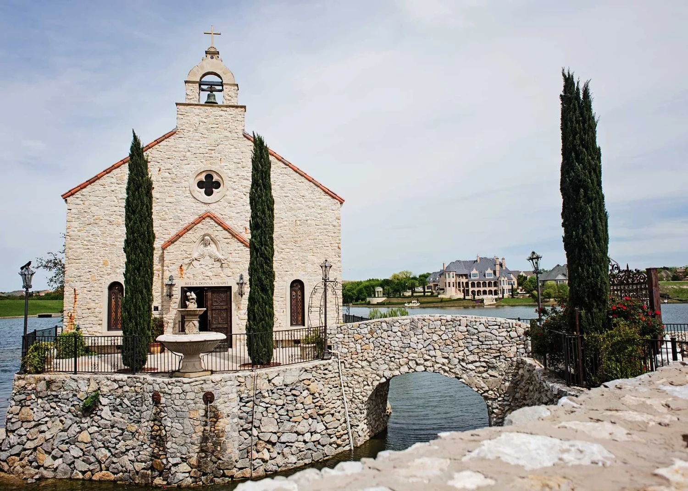
Village, Hospitality, Commercial · McKinney, TX
Village, Hospitality · Entrada Village, Westlake, TX
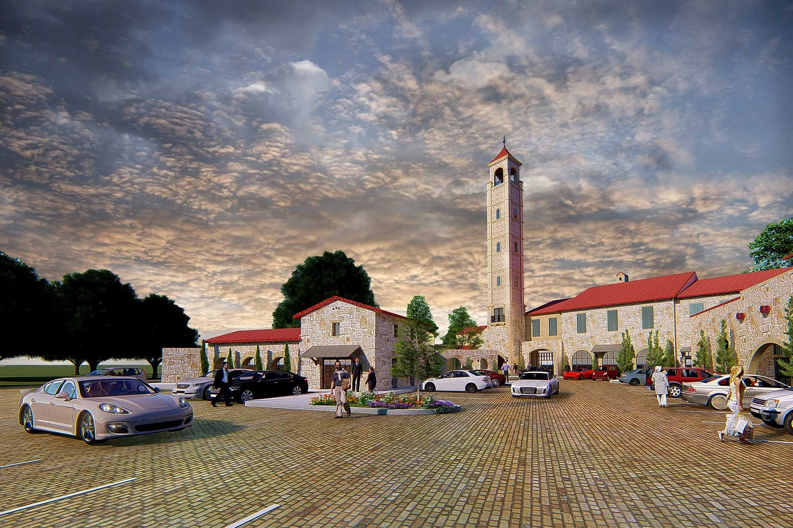
Residential, Custom · Preston Hollow, Dallas, TX
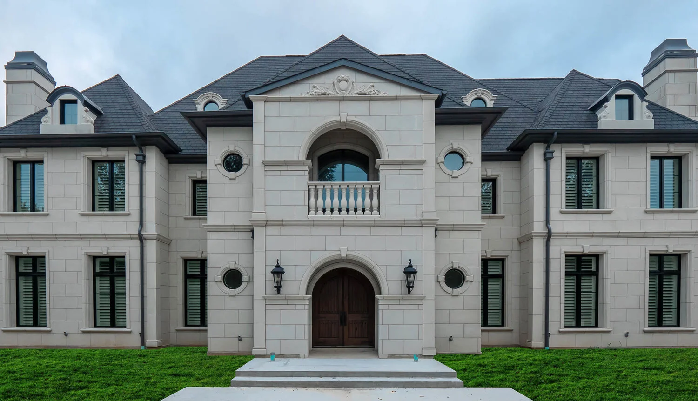
Residential, Custom
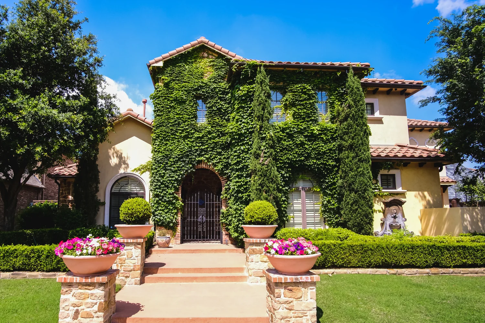
Residential
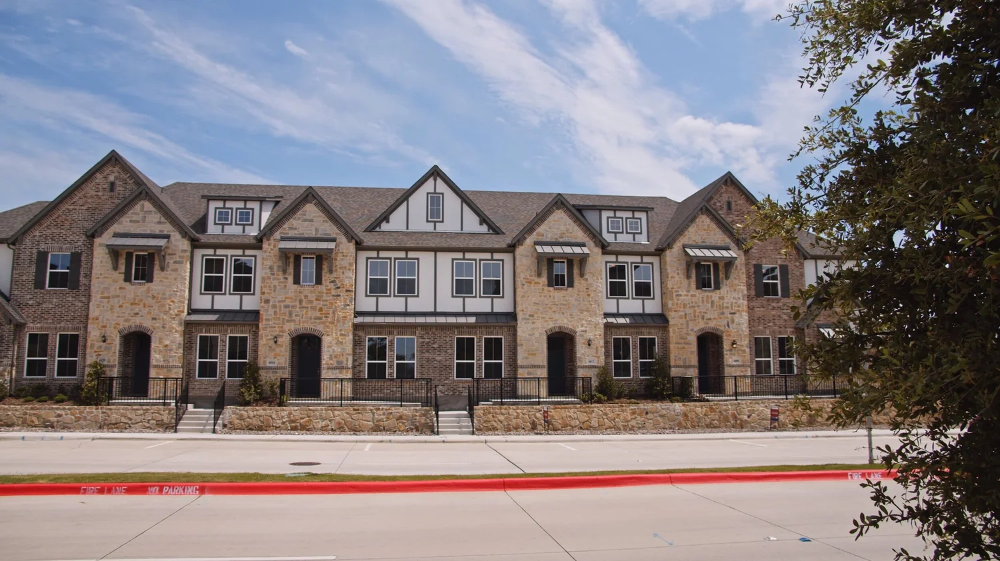
( who we are )
“Transparent. Imaginative. Open.”
Bush Architects is a one stop shop for all facets of quality design and site planning. While based in DFW, our team is constantly growing and designing for clients all over Texas and beyond.
( our services )
( our partners )
Ralph Bush Managing Partner
Michael Zizik, RA, AIA, NCARB Partner / Architect
( interior studio )
Tara Bania, RID, CID, NCIDQ Interior Design Studio Director
( contact )